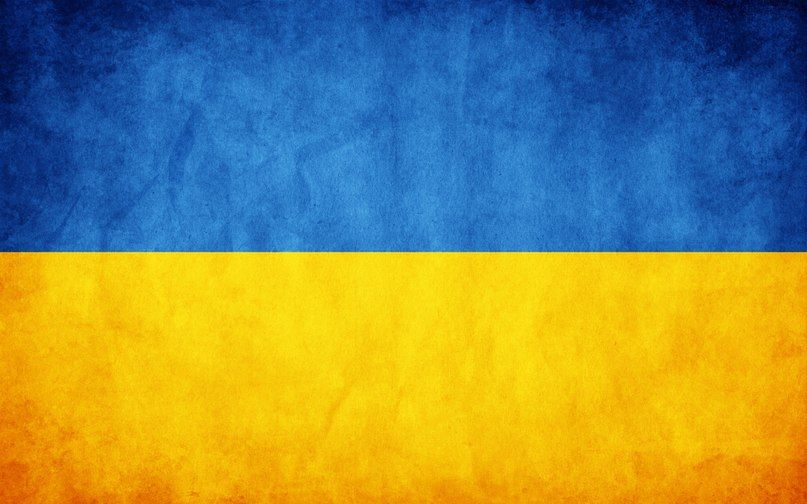

Ukraine
Україна — унітарна держава. Вона складається з 24 областей, однієї автономної республіки Крим і двох міст з особливим статусом: Київ — столиця та найбільше місто; та Севастополь. Україна є президентсько-парламентською республікою з окремою законодавчою, виконавчою та судовою гілками влади. Найвищим органом державної влади є Верховна рада України, а главою держави — Президент України.Україна — промислово-аграрна країна. Вона є одним з провідних експортерів деяких видів сільськогосподарської продукції і продовольства, зокрема, соняшникової олії. Народно-господарський комплекс країни включає такі види промисловості як важке машинобудування, чорна та кольорова металургія, суднобудування, автомобілебудування, авіабудування, виробництво техніки, обладнання для електростанцій, нафтогазової та хімічної промисловості. Україна є потужним виробником та експортером електроенергії. Налагоджено виробництво ракетоносіїв, супутників та обладнання для дослідження космосу. Україна є значним виробником зброї — танків, військово-транспортних літаків, зенітно-ракетних комплексів, оптичного обладнання.Україна є одним із членів-засновників Організації Об'єднаних Націй, а також членом понад сорока міжнародних організацій.
